Profile
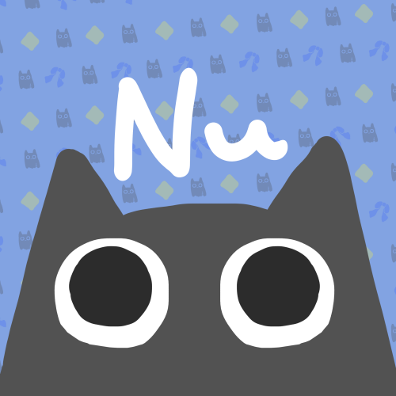
Mitui Itumi（蜜依 いつみ）
職業訓練校でHTML/CSS/JavaScript/PHPを半年勉強し、現在業務上でVB.NETを使用しています。
ふつうに副業禁止の会社勤めなので、お仕事とかは別段できません。
このページはつくったものがもったいないので公開しているだけです。
Works
Button
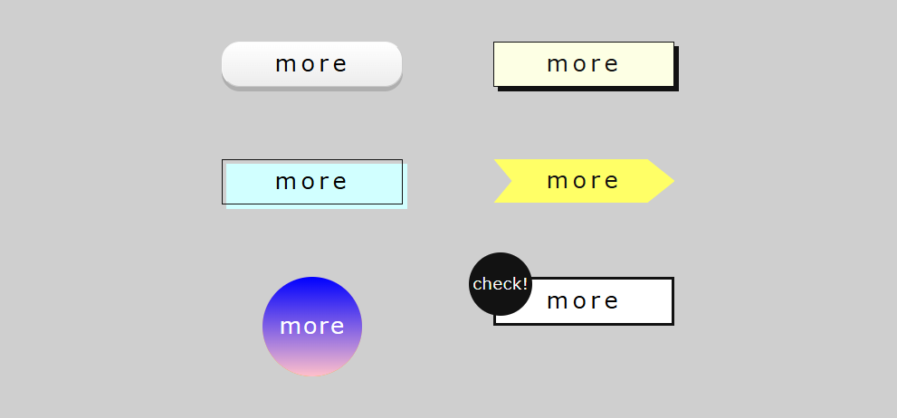
ホバー時のアニメーションがついた、様々なデザインのボタンです。HTML/CSSを使用して作成しました。
Form
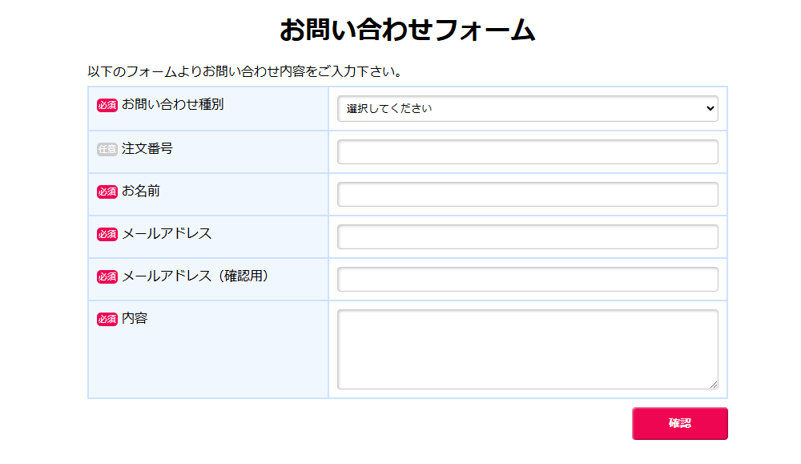
企業のお問い合わせフォームを想定した、レスポンシブ対応のWebページです。HTML/CSSを使用して作成しました。
Simple template
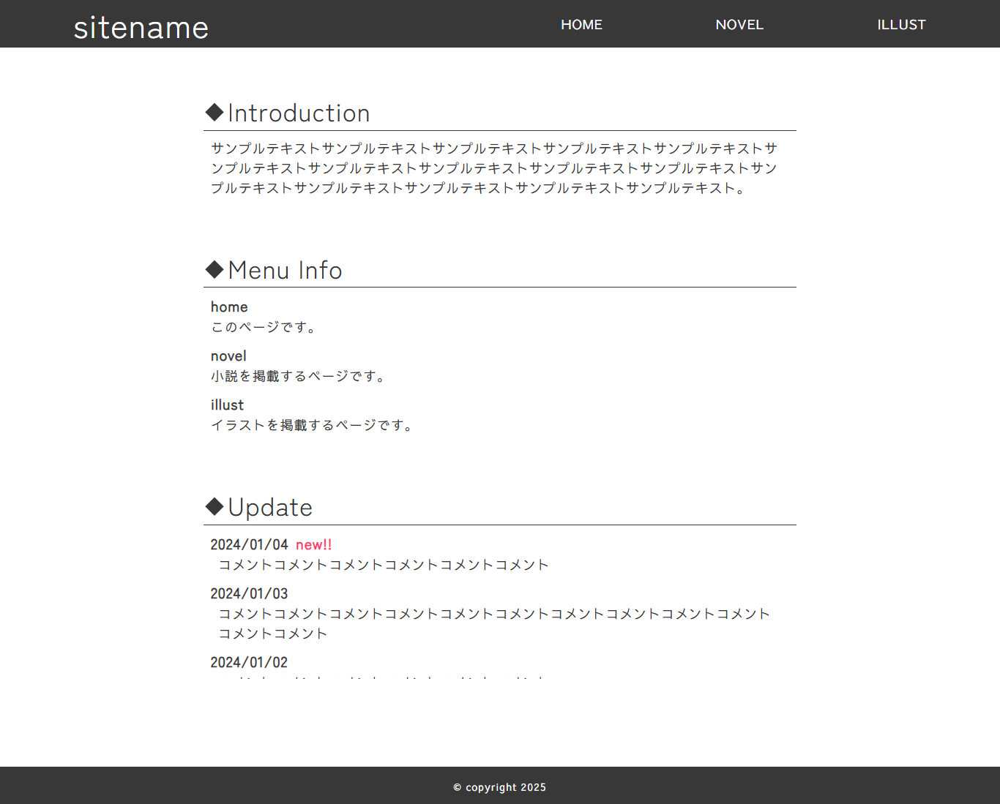
創作活動を行っている方が、作品を発表するためのホームページテンプレートです。レスポンシブ対応。HTML/CSSを使用して作成しました。
Design House Renovations
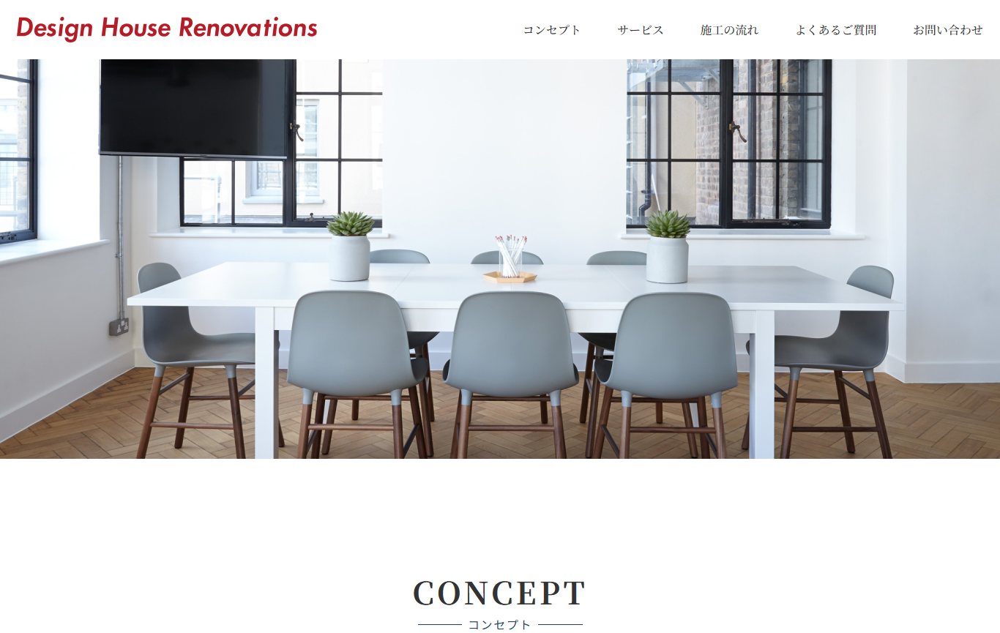
リフォーム会社のホームページを想定した、レスポンシブ対応のWebサイトです。訓練校から配布されたデザインカンプをもとに、HTML/CSS/JavaScriptを使用して作成しました。
Dialog
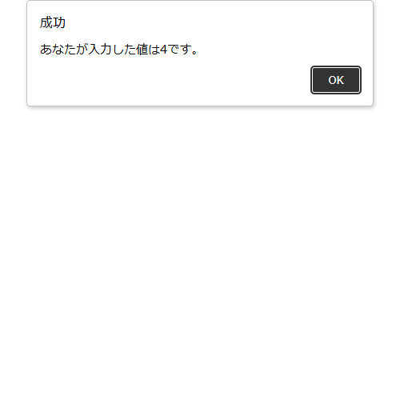
フォームへ入力した内容に対応した文章が表示される、オリジナルデザインのダイアログです。HTML/CSS/JavaScriptを使用して作成しました。
Modal
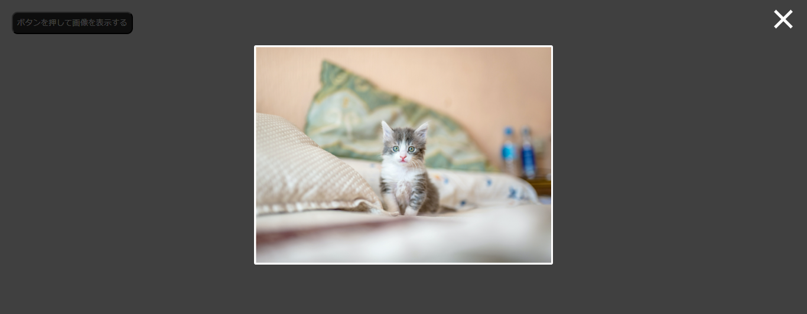
ボタンを押すと猫の写真がモーダルで表示されます。HTML/CSS/JavaScriptを使用して作成しました。
Countdown timer
シンプルなカウントダウンタイマーです。HTML/CSS/JavaScriptを使用して作成しました。
Shooting game
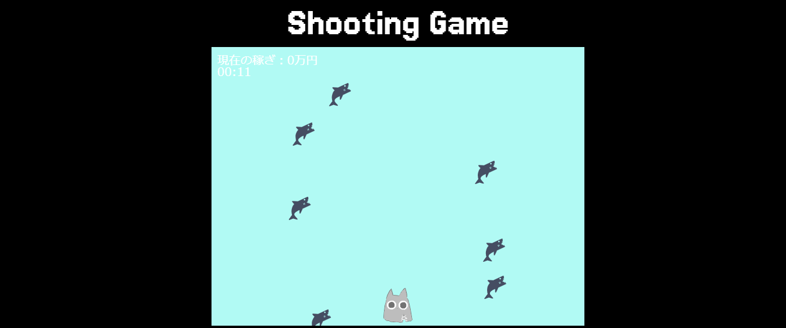
PC向けの簡素なシューティングゲームです。HTML/CSS/JavaScriptを使用して作成しました。
TAIWAN
台湾の観光ホームページです。訓練校から配布されたデザインカンプをもとに、HTML/CSS/JavaScriptを使用して作成しました。
Hideout
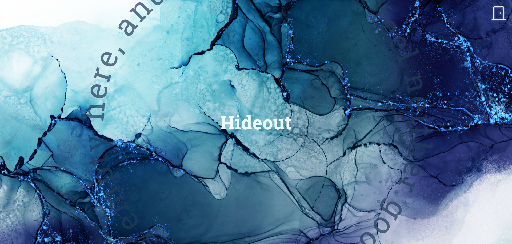
現在表示されている、ポートフォリオ用に制作したWebページです。HTML/CSS/JavaScriptを使用して作成しました。
Typing Game
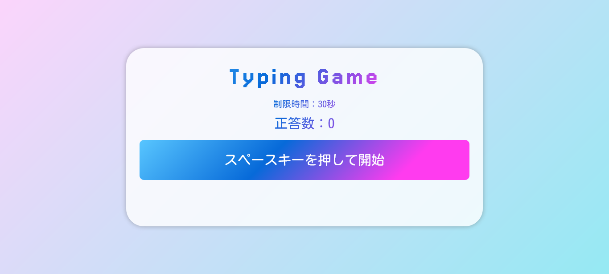
PC向けの簡素なタイピングゲームです。HTML/CSS/JavaScriptを使用して作成しました。
Calendar
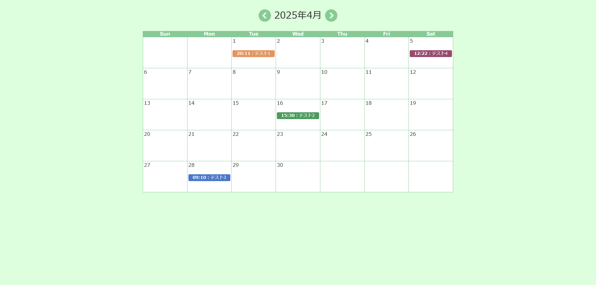
PC向けのカレンダーWebアプリです。PHP/CSSを使用して作成しました。
Skill
HTML
- HTML Living Standardを用いたWebページの構造化
- アクセシビリティに配慮したマークアップ
- formタグ、inputタグを使用した入力フォームの作成
- Pugの使用
CSS
- Webページの装飾
- スマートフォン対応
- レスポンシブWebデザイン
- flexレイアウトを用いたスタイルの指定
- gridレイアウトを用いたスタイルの指定
- positionプロパティを用いた配置指定
- transformプロパティによる変形
- transitionプロパティを用いたアニメーション
- キーフレームアニメーションの適用
- GoogleChrome拡張機能『PerfectPixel』を利用したピクセルパーフェクトの実現
- SCSSの使用
JavaScript
- DOM操作
- 条件分岐
- 繰り返し
- 変数、定数の定義
- 比較演算子、算術演算子の使用
- ファンクションの作成、呼び出し
- 配列の作成、配列内の項目を取り出して使用
- フォームに入力された内容の取得
- Dateオブジェクトの取り扱い
- URLの操作
- cookieの操作
- Web-APIの活用
- イベントハンドラー、イベントリスナーを使用したイベントの作成
- styleの操作
- canvasの使用
- デバック
Java
- 変数の定義
- 演算子の使用
- 条件分岐
- 繰り返し
- 配列の作成
気が向いたらまじめに勉強します。
PHP
- XAMPPを用いた開発環境の構築
- echo、printを用いた、HTMLへのメッセージ出力
- require文
- フォームに入力されたパラメーターの取得
- 四則演算
- 変数の定義
- 配列の作成
- 条件分岐
- 繰り返し
- date関数による日時の表示
- rand関数による乱数の使用
- 正規表現による入力内容のチェック
- mb_convert_kana関数による文字列、数値の変換
- ファイルの入出力
- MySQLによるデータベースの作成・操作
Others
- 基本情報技術者（2025年3月合格）
- Visual Studio Code（フロントエンド言語記述に使用）
- Eclipse（Java記述に使用）
- FireAlpaca（イラスト制作ソフト）
- Aviutil（動画制作ソフト）
- Microsoft 365（旧称 Office）
- Googleスプレッドシート（表計算ソフト）
- WordPress（コンテンツ管理システム）
- Unity（ゲームエンジン）
- Figma（デザインカンプ閲覧に使用）
- Bootstrapの使用（Webアプリケーションフレームワーク）
- VB.NET（さわりだけわかります）